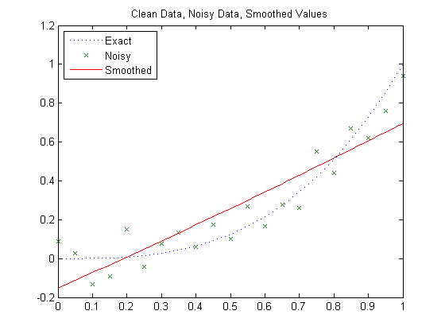
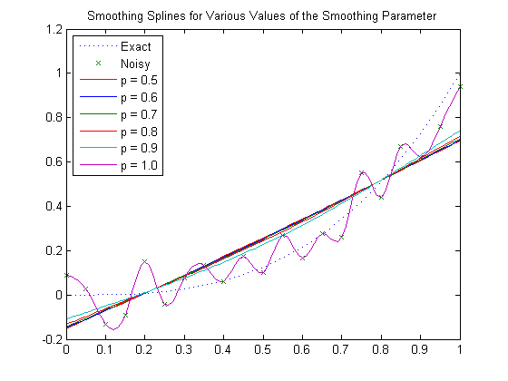
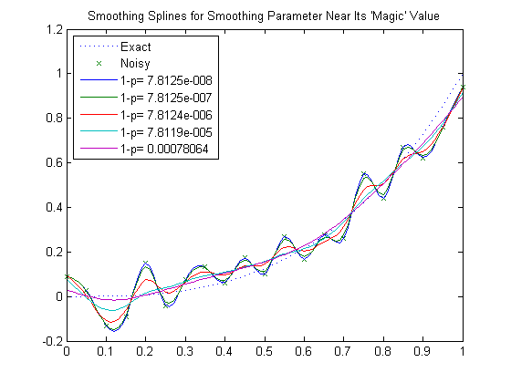
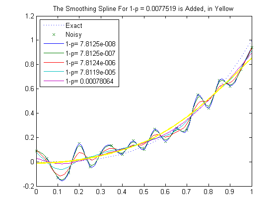
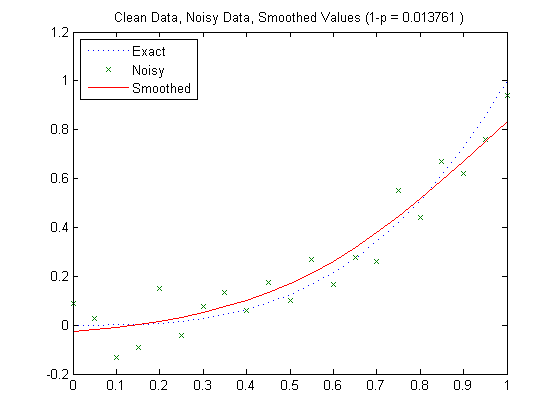
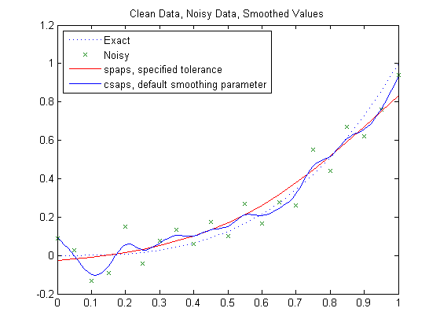

Cubic Smoothing Splines
This demo illustrates how to use the csaps and spaps commands from Curve Fitting Toolbox™ to construct cubic smoothing splines.
Contents
The CSAPS Command
The command csaps provides the smoothing spline. This is a cubic spline that more or less follows the presumed underlying trend in noisy data. A smoothing parameter, to be chosen by you, determines just how closely the smoothing spline follows the given data. Here is the basic information, an abbreviated version of the documentation:
CSAPS Cubic smoothing spline.
VALUES = CSAPS(X, Y, P, XX)
Returns the values at XX of the cubic smoothing spline for the given data (X,Y) and depending on the smoothing parameter P, chosen from the interval [0 .. 1]. This smoothing spline f minimizes
P * sum_i W(i)(Y(i) - f(X(i)))^2 + (1-P) * integral (D^2 f)^2
Example: Noisy Data From a Cubic Polynomial
Here are some trial runs. We start with data from a simple cubic, q(x) := x^3, contaminate the values with some noise, and choose the value of the smoothing parameter to be .5. Then plot the resulting smoothed values, along with the underlying cubic, and the contaminated data.
xi = (0:.05:1); q = @(x) x.^3; yi = q(xi); randomStream = RandStream.create( 'mcg16807', 'Seed', 23 ); ybad = yi+.3*(rand(randomStream, size(xi))-.5); p = .5; xxi = (0:100)/100; ys = csaps(xi,ybad,p,xxi); plot(xi,yi,':',xi,ybad,'x',xxi,ys,'r-') title('Clean Data, Noisy Data, Smoothed Values') legend( 'Exact', 'Noisy', 'Smoothed', 'Location', 'NorthWest' )
The smoothing is way overdone here. By choosing the smoothing parameter p closer to 1, we obtain a smoothing spline closer to the given data. We try p = .6, .7, .8, .9, 1, and plot the resulting smoothing splines.
yy = zeros(5,length(xxi)); p = [.6 .7 .8 .9 1]; for j=1:5 yy(j,:) = csaps(xi,ybad,p(j),xxi); end hold on plot(xxi,yy); hold off title('Smoothing Splines for Various Values of the Smoothing Parameter') legend({'Exact','Noisy','p = 0.5','p = 0.6','p = 0.7','p = 0.8', ... 'p = 0.9', 'p = 1.0'}, 'Location', 'NorthWest' )
We see that the smoothing spline can be very sensitive to the choice of the smoothing parameter. Even for p = 0.9, the smoothing spline is still far from the underlying trend, while for p = 1, we get the interpolant to the (noisy) data.
In fact, the formulation used by csapi (p.235ff of A Practical Guide to Splines) is very sensitive to scaling of the independent variable. A simple analysis of the equations used shows that the sensitive range for p is around 1/(1+epsilon), with epsilon := h^3/16, and h the average difference between neighboring sites. Specifically, you would expect a close following of the data when p = 1/(1+epsilon/100) and some satisfactory smoothing when p = 1/(1+epsilon*100).
The plot below shows the smoothing spline for values of p near this magic number 1/(1+epsilon). For this case, it is more informative to look at 1-p since the magic number, 1/(1+epsilon), is very close to 1.
epsilon = ((xi(end)-xi(1))/(numel(xi)-1))^3/16; 1 - 1/(1+epsilon)
ans = 7.8124e-006
plot(xi,yi,':',xi,ybad,'x') hold on labels = cell(1,5); for j=1:5 p = 1/(1+epsilon*10^(j-3)); yy(j,:) = csaps(xi,ybad,p,xxi); labels{j} = ['1-p= ',num2str(1-p)]; end plot(xxi,yy) title('Smoothing Splines for Smoothing Parameter Near Its ''Magic'' Value') legend( [{'Exact', 'Noisy'}, labels], 'Location', 'NorthWest' ) hold off
In this example, the smoothing spline is very sensitive to variation of the smoothing parameter near the magic number. The one farthest from 1 seems the best choice from these, but you may prefer the one beyond that.
p = 1/(1+epsilon*10^3); yy = csaps(xi,ybad,p,xxi); hold on plot( xxi, yy, 'y', 'LineWidth', 2 ) title( sprintf( 'The Smoothing Spline For 1-p = %s is Added, in Yellow', num2str(1-p) ) ) hold off
You can also supply csaps with error weights, to pay more attention to some data points than others. Also, if you do not supply the evaluation sites xx, then csaps returns the ppform of the smoothing spline.
Finally, csaps can also handle vector-valued data and even multivariate, gridded data.
The SPAPS Command
The cubic smoothing spline provided by the command spaps differs from the one constructed in csaps only in the way it is selected. Here is an abbreviated version of the documentation for spaps:
SPAPS Smoothing spline.
[SP,VALUES] = SPAPS(X,Y,TOL) returns the B-form and, if asked, the values at X, of a cubic smoothing spline f for the given data (X(i),Y(:,i)), i=1,2, ..., n.
The smoothing spline f minimizes the roughness measure
F(D^2 f) := integral ( D^2 f(t) )^2 dt on X(1) < t < X(n)
over all functions f for which the error measure
E(f) := sum_j { W(j)*( Y(:,j) - f(X(j)) )^2 : j=1,...,n }is no bigger than the given TOL. Here, D^M f denotes the M-th derivative of f. The weights W are chosen so that E(f) is the Composite Trapezoid Rule approximation for F(y-f).
f is constructed as the unique minimizer of
rho*E(f) + F(D^2 f),
with the smoothing parameter RHO so chosen so that E(f) equals TOL. Hence, FN2FM(SP,'pp') should be (up to roundoff) the same as the output from CPAPS(X,Y,RHO/(1+RHO)).
Tolerance vs. Smoothing Parameter
It may be easier to supply a suitable tolerance for spaps than the smoothing parameter p required by csaps. In our earlier example, we added uniformly-distributed random noise from the interval 0.3*[-0.5 .. 0.5]. Hence, we can estimate a reasonable value for tol as the value of the error measure e at such noise.
tol = sum((.3*(rand(randomStream, size(yi))-.5)).^2);
This plot shows the resulting smoothing spline constructed by spaps. Note that the error weights are specified to be uniform, which is their default value in csaps.
[sp,ys,rho] = spaps(xi,ybad,tol,ones(size(xi))); plot(xi,yi,':',xi,ybad,'x',xi,ys,'r-') title( sprintf( 'Clean Data, Noisy Data, Smoothed Values (1-p = %s )', num2str(1/(1+rho)) ) ); legend( {'Exact','Noisy','Smoothed'}, 'location', 'NorthWest' )
The figure title shows the value of p you would use in csaps to obtain exactly this smoothing spline for these data.
Here, in addition, is the smoothing spline provided by csaps when not given a smoothing parameter. In this case csaps chooses the parameter by a certain ad hoc procedure that attempts to locate the region where the smoothing spline is most sensitive to the smoothing parameter (similar to the earlier discussion).
hold on plot(xxi,fnval(csaps(xi,ybad),xxi),'-') title('Clean Data, Noisy Data, Smoothed Values') legend({'Exact' 'Noisy' 'spaps, specified tolerance' ... 'csaps, default smoothing parameter'}, 'Location', 'NorthWest' ) hold off
CSAPS vs. SPAPS
The csaps and spaps commands differ in the way in which you specify a particular smoothing spline, via a smoothing parameter vs. a tolerance. Another difference is that spaps can provide a linear or a quintic smoothing spline, in addition to the cubic smoothing spline.
The quintic smoothing spline is better than the cubic smoothing spline in the situation when you would like the second derivative to move as little as possible.